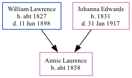

Annie Laurence c1858 -
[ Home ] | [ Calendar ] | [ Surnames Index ] | [ Family History ]The child of William Lawrence (a harbor laborer) and Johanna Edwards, Annie Laurence, the great-great-aunt of <a href="I1.html">Nigel Horne</a>, was born in Ramsgate, Kent, England <i>c.</i> 1858<span class="citation">1,2</span>.</p><p>Throughout her life, she lived on Chapel Lane, St Lawrence, Thanet, Kent, England on Apr 7, 1861<span class="citation">3</span>; and at Rear of Southwood Lodge, St Lawrence in Thanet on Apr 2, 1871<span class="citation">4</span>.
Parents
- William was born c. 1827
- Johanna Brooker was born in 1831
Citations
- 1861 England Census Online publication - Provo, UT, USA: The Generations Network, Inc., 2005.Original data - Census Returns of England and Wales, 1861. Kew, Surrey, England: The National Archives of the UK (TNA): Public Record Office (PRO), 1861. Data imaged from the National
- 1871 England Census Online publication - Provo, UT, USA: The Generations Network, Inc., 2004.Original data - Census Returns of England and Wales, 1871. Kew, Surrey, England: The National Archives of the UK (TNA): Public Record Office (PRO), 1871. Data imaged from the National
- 1861 England, Wales & Scotland Census - Findmypast (was age 3 and the daughter of the head of the household)
- 1871 England, Wales & Scotland Census - Findmypast (was age 13 and the daughter of the head of the household)
Media
1861 England, Wales & Scotland Census - GBC-1861-0003546443
Family Tree
Generated by Ged2Site. Last updated on Jul 20, 2025